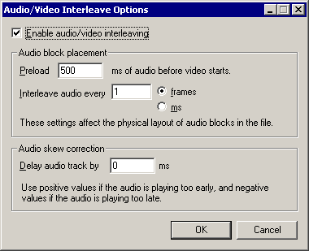

On a crash...
Dialogs: Video filters
Video frame rate control
Video color depth
Video range
Video compression
Audio filters
Audio interleaving
Audio compression
Audio conversion
Audio volume
Capture settings
Capture preferences
Capture volume meter
Preferences
|  Although video clips have simultaneous audio and video streams that play at the same time, the files that contain them are a single stream. Interleaving fakes having two streams by slicing the audio and video streams into chunks and mixing them together in chunks by time. A player reading an interleaved file receives a little bit of audio, then a bit of video, and then more audio, etc., buffering them in memory for a short time before playing the two together. VirtualDub's audio interleaving dialog controls how interleaving is performed. | Note | Audio interleaving has absolutely zero impact on when audio plays -- regardless of how audio and video frames are scattered in an AVI file, they still maintain the same timing relationship, because the index block sequences them properly. | | Note | Interleaving audio and video is not necessary unless the file is stored on a medium that streams much more efficiently than it handles random access, such as a CD-ROM drive or transmission over the Internet. High-speed devices such as hard disks can handle playback from non-interleaved files without problem, which is a consideration as interleaving isn't free -- it costs a small amount of overhead in the file size. | - Enable audio/video interleaving
- If this option is selected, audio blocks are interleaved between video frames throughout the file. If not, all of the audio is placed at the end.
- Preload
- Players require a certain amount of audio to be buffered ahead of time before starting video playback. The preload option controls how much audio is placed at the beginning of the file before the first video frame, in milliseconds. Usual values for this are 500ms (half second) or 1000ms (full second). If this setting is improperly adjusted, the file may not play optimally on slow computers or slow devices, although with modern video players this is less of a concern.
- Interleave interval
- Controls how often audio blocks are scattered throughout the file -- the shorter the interval, the less buffering required by the player, but the more overhead in the output file. If the interleaving interval is too large, players will have to seek back in forth in the file, which has the worst of both worlds since the interleaving won't allow the player to do large, contiguous reads in the file. Usual values for this option are either interleave once per frame (1 frame) or every half second (500ms).
- Audio skew correction
- This isn't really an interleaving option, and is the only option here that actually does affect audio sync -- but it is here for lack of a better place. Audio delay basically shifts the audio track back and forth, either by dropping samples from the beginning or adding samples at the start (zero for PCM, duplicated first sample for compressed audio). Use this option to shift an audio track into place if it seems a bit off.
| Note | Audio compression may impede use of delays. Some formats, particularly, ADPCM, use large block sizes that will limit the granularity of adjustments. The MP3 format used in AVI, on the other hand, has a hack in its format that prevents applications from seeing the "true" block size of the format. The result is generally junk produced at the beginning of the MP3 stream, which may not produce the desired delay depending on the player. An audio editor specifically designed to edit MPEG audio streams is required in these cases. | |